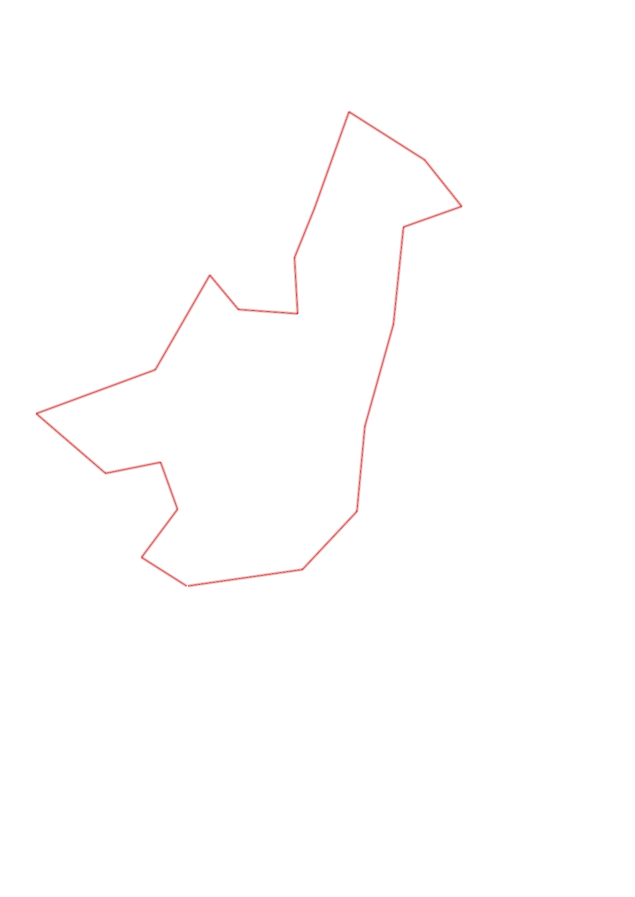
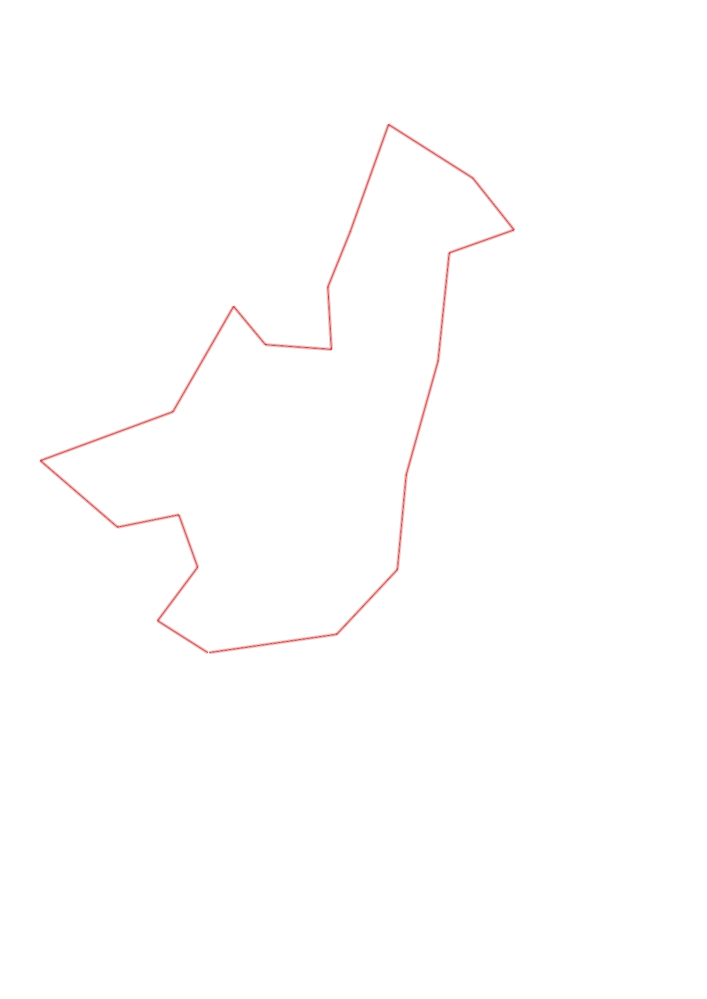

| Control |
Points |
Time Punched |
Distance |
Your Time |
Pace |
Place |
Fastest Time |
Median Time |
% Behind Fastest |
| 35 |
30 |
|
0.27 |
0:01:28 |
05:25 |
6 / 17 |
0:01:07 |
0:01:37 |
31% |
| 51 |
50 |
|
0.3 |
0:03:09 |
10:30 |
7 / 12 |
0:02:01 |
0:03:06 |
56% |
| 58 |
50 |
|
0.25 |
0:02:17 |
09:08 |
6 / 9 |
0:01:32 |
0:02:16 |
48% |
| 72 |
70 |
|
0.28 |
0:02:38 |
09:24 |
6 / 9 |
0:01:47 |
0:02:29 |
47% |
| 92 |
90 |
|
0.46 |
0:03:32 |
07:40 |
2 / 11 |
0:03:10 |
0:04:02 |
11% |
| 53 |
50 |
|
0.63 |
0:06:13 |
09:52 |
2 / 8 |
0:05:32 |
0:06:36 |
12% |
| 44 |
40 |
|
0.54 |
0:03:46 |
06:58 |
3 / 3 |
0:03:15 |
0:03:44 |
15% |
| 65 |
60 |
|
0.22 |
0:04:50 |
21:58 |
3 / 3 |
0:03:04 |
0:04:00 |
57% |
| 34 |
30 |
|
0.3 |
0:03:18 |
11:00 |
4 / 4 |
0:02:51 |
0:03:16 |
15% |
| 39 |
30 |
|
0.28 |
0:02:29 |
08:52 |
2 / 7 |
0:01:51 |
0:02:56 |
34% |
| 77 |
70 |
|
0.27 |
0:02:03 |
07:35 |
7 / 9 |
0:01:14 |
0:01:56 |
66% |
| 100 |
100 |
|
0.51 |
0:03:45 |
07:21 |
4 / 6 |
0:02:50 |
0:03:40 |
32% |
| 47 |
40 |
|
0.45 |
0:03:39 |
08:06 |
4 / 4 |
0:03:04 |
0:03:14 |
19% |
| 67 |
60 |
|
0.3 |
0:02:17 |
07:36 |
4 / 5 |
0:01:53 |
0:02:10 |
21% |
| 50 |
50 |
|
0.31 |
0:04:55 |
15:51 |
3 / 4 |
0:02:25 |
0:03:45 |
103% |
| 61 |
60 |
|
0.49 |
0:03:34 |
07:16 |
3 / 4 |
0:02:54 |
0:03:16 |
22% |
| 59 |
50 |
|
0.53 |
0:04:06 |
07:44 |
4 / 7 |
0:03:28 |
0:04:06 |
18% |
| 48 |
40 |
|
0.43 |
0:05:03 |
11:44 |
2 / 3 |
0:04:29 |
0:05:03 |
12% |
| 80 |
80 |
|
0.4 |
0:05:17 |
13:12 |
1 / 2 |
0:05:17 |
0:05:21 |
0% |
| Finish |
0 |
|
0.57 |
0:04:18 |
07:32 |
2 / 2 |
0:04:00 |
0:04:09 |
7% |
Total Distance Covered: 7.79km
Points Scored: 1050
Late Penalty: -260
Final Score: 790
Total Time: 1hours 12minutes 37seconds
Efficiency: 101.41 points/km
 
